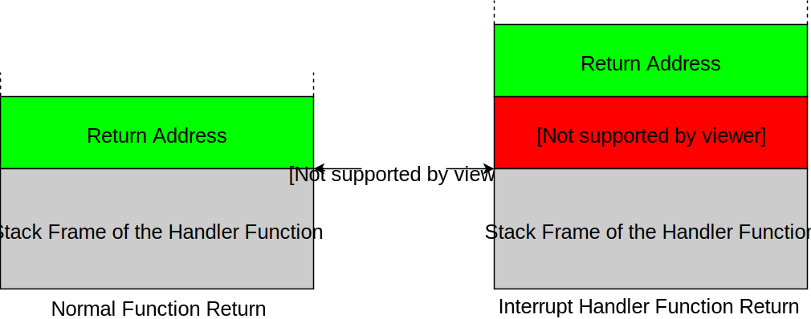
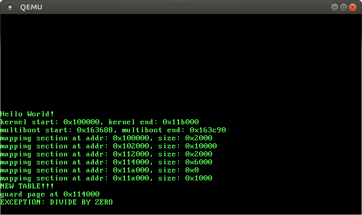

What is your view on Redox ? https://github.com/redox-os...
Catching Exceptions
No longer updated! You are viewing the a post of the first edition of “Writing an OS in Rust”, which is no longer updated. You can find the second edition here.
In this post, we start exploring exceptions. We set up an interrupt descriptor table and add handler functions. At the end of this post, our kernel will be able to catch divide-by-zero faults.
As always, the complete source code is on GitHub. Please file issues for any problems, questions, or improvement suggestions. There is also a comment section at the end of this page.
Note: This post describes how to handle exceptions using naked functions (see “Handling Exceptions with Naked Functions” for an overview). Our new way of handling exceptions can be found in the “Handling Exceptions” post.
🔗Exceptions
An exception signals that something is wrong with the current instruction. For example, the CPU issues an exception if the current instruction tries to divide by 0. When an exception occurs, the CPU interrupts its current work and immediately calls a specific exception handler function, depending on the exception type.
We’ve already seen several types of exceptions in our kernel:
- Invalid Opcode: This exception occurs when the current instruction is invalid. For example, this exception occurred when we tried to use SSE instructions before enabling SSE. Without SSE, the CPU didn’t know the
movupsandmovapsinstructions, so it throws an exception when it stumbles over them. - Page Fault: A page fault occurs on illegal memory accesses. For example, if the current instruction tries to read from an unmapped page or tries to write to a read-only page.
- Double Fault: When an exception occurs, the CPU tries to call the corresponding handler function. If another exception exception occurs while calling the exception handler, the CPU raises a double fault exception. This exception also occurs when there is no handler function registered for an exception.
- Triple Fault: If an exception occurs while the CPU tries to call the double fault handler function, it issues a fatal triple fault. We can’t catch or handle a triple fault. Most processors react by resetting themselves and rebooting the operating system. This causes the bootloops we experienced in the previous posts.
For the full list of exceptions check out the OSDev wiki.
🔗The Interrupt Descriptor Table
In order to catch and handle exceptions, we have to set up a so-called Interrupt Descriptor Table (IDT). In this table we can specify a handler function for each CPU exception. The hardware uses this table directly, so we need to follow a predefined format. Each entry must have the following 16-byte structure:
| Type | Name | Description |
|---|---|---|
| u16 | Function Pointer [0:15] | The lower bits of the pointer to the handler function. |
| u16 | GDT selector | Selector of a code segment in the GDT. |
| u16 | Options | (see below) |
| u16 | Function Pointer [16:31] | The middle bits of the pointer to the handler function. |
| u32 | Function Pointer [32:63] | The remaining bits of the pointer to the handler function. |
| u32 | Reserved |
The options field has the following format:
| Bits | Name | Description |
|---|---|---|
| 0-2 | Interrupt Stack Table Index | 0: Don’t switch stacks, 1-7: Switch to the n-th stack in the Interrupt Stack Table when this handler is called. |
| 3-7 | Reserved | |
| 8 | 0: Interrupt Gate, 1: Trap Gate | If this bit is 0, interrupts are disabled when this handler is called. |
| 9-11 | must be one | |
| 12 | must be zero | |
| 13‑14 | Descriptor Privilege Level (DPL) | The minimal privilege level required for calling this handler. |
| 15 | Present |
Each exception has a predefined IDT index. For example the invalid opcode exception has table index 6 and the page fault exception has table index 14. Thus, the hardware can automatically load the corresponding IDT entry for each exception. The Exception Table in the OSDev wiki shows the IDT indexes of all exceptions in the “Vector nr.” column.
When an exception occurs, the CPU roughly does the following:
- Read the corresponding entry from the Interrupt Descriptor Table (IDT). For example, the CPU reads the 14-th entry when a page fault occurs.
- Check if the entry is present. Raise a double fault if not.
- Push some registers on the stack, including the instruction pointer and the EFLAGS register. (We will use these values in a future post.)
- Disable interrupts if the entry is an interrupt gate (bit 40 not set).
- Load the specified GDT selector into the CS segment.
- Jump to the specified handler function.
🔗Handling Exceptions
Let’s try to catch and handle CPU exceptions. We start by creating a new interrupts module with an idt submodule:
// in src/lib.rs
...
mod interrupts;
...
// src/interrupts/mod.rs
mod idt;
Now we create types for the IDT and its entries:
// src/interrupts/idt.rs
use x86_64::instructions::segmentation;
use x86_64::structures::gdt::SegmentSelector;
use x86_64::PrivilegeLevel;
pub struct Idt([Entry; 16]);
#[derive(Debug, Clone, Copy)]
#[repr(C, packed)]
pub struct Entry {
pointer_low: u16,
gdt_selector: SegmentSelector,
options: EntryOptions,
pointer_middle: u16,
pointer_high: u32,
reserved: u32,
}
The IDT is variable sized and can have up to 256 entries. We only need the first 16 entries in this post, so we define the table as [Entry; 16]. The remaining 240 handlers are treated as non-present by the CPU.
The Entry type is the translation of the above table to Rust. The repr(C, packed) attribute ensures that the compiler keeps the field ordering and does not add any padding between them. Instead of describing the gdt_selector as a plain u16, we use the SegmentSelector type of the x86 crate. We also merge bits 32 to 47 into an option field, because Rust has no u3 or u1 type. The EntryOptions type is described below:
🔗Entry Options
The EntryOptions type has the following skeleton:
#[derive(Debug, Clone, Copy)]
pub struct EntryOptions(u16);
impl EntryOptions {
fn new() -> Self {...}
pub fn set_present(&mut self, present: bool) {...}
pub fn disable_interrupts(&mut self, disable: bool) {...}
pub fn set_privilege_level(&mut self, dpl: u16) {...}
pub fn set_stack_index(&mut self, index: u16) {...}
}
The implementations of these methods need to modify the correct bits of the u16 without touching the other bits. For example, we would need the following bit-fiddling to set the stack index:
self.0 = (self.0 & 0xfff8) | stack_index;
Or alternatively:
self.0 = (self.0 & (!0b111)) | stack_index;
Or:
self.0 = ((self.0 >> 3) << 3) | stack_index;
Well, none of these variants is really readable and it’s very easy to make mistakes somewhere. Therefore I created a BitField trait that provides the following Range-based API:
self.0.set_bits(0..3, stack_index);
I think it is much more readable, since we abstracted away all bit-masking details. The BitField trait is contained in the bit_field crate. (It’s pretty new, so it might still contain bugs.) To add it as dependency, we run cargo add bit_field and add extern crate bit_field; to our src/lib.rs.
Now we can use the trait to implement the methods of EntryOptions:
// in src/interrupts/idt.rs
use bit_field::BitField;
#[derive(Debug, Clone, Copy)]
pub struct EntryOptions(u16);
impl EntryOptions {
fn minimal() -> Self {
let mut options = 0;
options.set_bits(9..12, 0b111); // 'must-be-one' bits
EntryOptions(options)
}
fn new() -> Self {
let mut options = Self::minimal();
options.set_present(true).disable_interrupts(true);
options
}
pub fn set_present(&mut self, present: bool) -> &mut Self {
self.0.set_bit(15, present);
self
}
pub fn disable_interrupts(&mut self, disable: bool) -> &mut Self {
self.0.set_bit(8, !disable);
self
}
pub fn set_privilege_level(&mut self, dpl: u16) -> &mut Self {
self.0.set_bits(13..15, dpl);
self
}
pub fn set_stack_index(&mut self, index: u16) -> &mut Self {
self.0.set_bits(0..3, index);
self
}
}
Note that the ranges are exclusive the upper bound. The minimal function creates an EntryOptions type with only the “must-be-one” bits set. The new function, on the other hand, chooses reasonable defaults: It sets the present bit (why would you want to create a non-present entry?) and disables interrupts (normally we don’t want that our exception handlers can be interrupted). By returning the self pointer from the set_* methods, we allow easy method chaining such as options.set_present(true).disable_interrupts(true).
🔗Creating IDT Entries
Now we can add a function to create new IDT entries:
impl Entry {
fn new(gdt_selector: SegmentSelector, handler: HandlerFunc) -> Self {
let pointer = handler as u64;
Entry {
gdt_selector: gdt_selector,
pointer_low: pointer as u16,
pointer_middle: (pointer >> 16) as u16,
pointer_high: (pointer >> 32) as u32,
options: EntryOptions::new(),
reserved: 0,
}
}
}
We take a GDT selector and a handler function as arguments and create a new IDT entry for it. The HandlerFunc type is described below. It is a function pointer that can be converted to an u64. We choose the lower 16 bits for pointer_low, the next 16 bits for pointer_middle and the remaining 32 bits for pointer_high. For the options field we choose our default options, i.e. present and disabled interrupts.
🔗The Handler Function Type
The HandlerFunc type is a type alias for a function type:
pub type HandlerFunc = extern "C" fn() -> !;
It needs to be a function with a defined calling convention, as it called directly by the hardware. The C calling convention is the de facto standard in OS development, so we’re using it, too. The function takes no arguments, since the hardware doesn’t supply any arguments when jumping to the handler function.
It is important that the function is diverging, i.e. it must never return. The reason is that the hardware doesn’t call the handler functions, it just jumps to them after pushing some values to the stack. So our stack might look different:

If our handler function returned normally, it would try to pop the return address from the stack. But it might get some completely different value then. For example, the CPU pushes an error code for some exceptions. Bad things would happen if we interpreted this error code as return address and jumped to it. Therefore interrupt handler functions must diverge1.
1
Another reason is that we overwrite the current register values by executing the handler function. Thus, the interrupted function looses its state and can’t proceed anyway.
🔗IDT methods
Let’s add a function to create new interrupt descriptor tables:
impl Idt {
pub fn new() -> Idt {
Idt([Entry::missing(); 16])
}
}
impl Entry {
fn missing() -> Self {
Entry {
gdt_selector: SegmentSelector::new(0, PrivilegeLevel::Ring0),
pointer_low: 0,
pointer_middle: 0,
pointer_high: 0,
options: EntryOptions::minimal(),
reserved: 0,
}
}
}
The missing function creates a non-present Entry. We could choose any values for the pointer and GDT selector fields as long as the present bit is not set.
However, a table with non-present entries is not very useful. So we create a set_handler method to add new handler functions:
impl Idt {
pub fn set_handler(&mut self, entry: u8, handler: HandlerFunc)
-> &mut EntryOptions
{
self.0[entry as usize] = Entry::new(segmentation::cs(), handler);
&mut self.0[entry as usize].options
}
}
The method overwrites the specified entry with the given handler function. We use the segmentation::cs function of the x86_64 crate to get the current code segment descriptor. There’s no need for different kernel code segments in long mode, so the current cs value should be always the right choice.
By returning a mutual reference to the entry’s options, we allow the caller to override the default settings. For example, the caller could add a non-present entry by executing: idt.set_handler(11, handler_fn).set_present(false).
🔗Loading the IDT
Now we’re able to create new interrupt descriptor tables with registered handler functions. We just need a way to load an IDT, so that the CPU uses it. The x86 architecture uses a special register to store the active IDT and its length. In order to load a new IDT we need to update this register through the lidt instruction.
The lidt instruction expects a pointer to a special data structure, which specifies the start address of the IDT and its length:
| Type | Name | Description |
|---|---|---|
| u16 | Limit | The maximum addressable byte in the table. Equal to the table size in bytes minus 1. |
| u64 | Offset | Virtual start address of the table. |
This structure is already contained in the x86_64 crate, so we don’t need to create it ourselves. The same is true for the lidt function. So we just need to put the pieces together to create a load method:
impl Idt {
pub fn load(&self) {
use x86_64::instructions::tables::{DescriptorTablePointer, lidt};
use core::mem::size_of;
let ptr = DescriptorTablePointer {
base: self as *const _ as u64,
limit: (size_of::<Self>() - 1) as u16,
};
unsafe { lidt(&ptr) };
}
}
The method does not need to modify the IDT, so it takes self by immutable reference. First, we create a DescriptorTablePointer and then we pass it to lidt. The lidt function expects that the base field has the type u64, therefore we need to cast the self pointer. For calculating the limit we use mem::size_of. The additional -1 is needed because the limit field has to be the maximum addressable byte (inclusive bound). We need an unsafe block around lidt, because the function assumes that the specified handler addresses are valid.
🔗Safety
But can we really guarantee that handler addresses are always valid? Let’s see:
- The
Idt::newfunction creates a new table populated with non-present entries. There’s no way to set these entries to present from outside of this module, so this function is fine. - The
set_handlermethod allows us to overwrite a specified entry and point it to some handler function. Rust’s type system guarantees that function pointers are always valid (as long as nounsafeis involved), so this function is fine, too.
There are no other public functions in the idt module (except load), so it should be safe… right?
Wrong! Imagine the following scenario:
pub fn init() {
load_idt();
cause_page_fault();
}
fn load_idt() {
let mut idt = idt::Idt::new();
idt.set_handler(14, page_fault_handler);
idt.load();
}
fn cause_page_fault() {
let x = [1,2,3,4,5,6,7,8,9];
unsafe{ *(0xdeadbeaf as *mut u64) = x[4] };
}
This won’t work. If we’re lucky, we get a triple fault and a boot loop. If we’re unlucky, our kernel does strange things and fails at some completely unrelated place. So what’s the problem here?
Well, we construct an IDT on the stack and load it. It is perfectly valid until the end of the load_idt function. But as soon as the function returns, its stack frame can be reused by other functions. Thus, the IDT gets overwritten by the stack frame of the cause_page_fault function. So when the page fault occurs and the CPU tries to read the entry, it only sees some garbage values and issues a double fault, which escalates to a triple fault and a CPU reset.
Now imagine that the cause_page_fault function declared an array of pointers instead. If the present was coincidentally set, the CPU would jump to some random pointer and interpret random memory as code. This would be a clear violation of memory safety.
🔗Fixing the load method
So how do we fix it? We could make the load function itself unsafe and push the unsafety to the caller. However, there is a much better solution in this case. In order to see it, we formulate the requirement for the load method:
The referenced IDT must be valid until a new IDT is loaded.
We can’t know when the next IDT will be loaded. Maybe never. So in the worst case:
The referenced IDT must be valid as long as our kernel runs.
This is exactly the definition of a static lifetime. So we can easily ensure that the IDT lives long enough by adding a 'static requirement to the signature of the load function:
pub fn load(&'static self) {...}
// ^^^^^^^ ensure that the IDT reference has the 'static lifetime
That’s it! Now the Rust compiler ensures that the above error can’t happen anymore:
error: `idt` does not live long enough
--> src/interrupts/mod.rs:78:5
78 |> idt.load();
|> ^^^
note: reference must be valid for the static lifetime...
note: ...but borrowed value is only valid for the block suffix following
statement 0 at 75:34
--> src/interrupts/mod.rs:75:35
75 |> let mut idt = idt::Idt::new();
|> ^
🔗A static IDT
So a valid IDT needs to have the 'static lifetime. We can either create a static IDT or deliberately leak a Box. We will most likely only need a single IDT for the foreseeable future, so let’s try the static approach:
// in src/interrupts/mod.rs
static IDT: idt::Idt = {
let mut idt = idt::Idt::new();
idt.set_handler(0, divide_by_zero_handler);
idt
};
extern "C" fn divide_by_zero_handler() -> ! {
println!("EXCEPTION: DIVIDE BY ZERO");
loop {}
}
We register a single handler function for a divide by zero error (index 0). Like the name says, this exception occurs when dividing a number by 0. Thus we have an easy way to test our new exception handler.
However, it doesn’t work this way:
error: calls in statics are limited to constant functions, struct and enum
constructors [E0015]
...
error: blocks in statics are limited to items and tail expressions [E0016]
...
error: references in statics may only refer to immutable values [E0017]
...
The reason is that the Rust compiler is not able to evaluate the value of the static at compile time. Maybe it will work someday when const functions become more powerful. But until then, we have to find another solution.
🔗Lazy Statics to the Rescue
Fortunately the lazy_static macro exists. Instead of evaluating a static at compile time, the macro performs the initialization when the static is referenced the first time. Thus, we can do almost everything in the initialization block and are even able to read runtime values.
Let’s add the lazy_static crate to our project:
// in src/lib.rs
#[macro_use]
extern crate lazy_static;
# in Cargo.toml
[dependencies.lazy_static]
version = "0.2.1"
features = ["spin_no_std"]
We need the spin_no_std feature, since we don’t link the standard library.
With lazy_static, we can define our IDT without problems:
// in src/interrupts/mod.rs
lazy_static! {
static ref IDT: idt::Idt = {
let mut idt = idt::Idt::new();
idt.set_handler(0, divide_by_zero_handler);
idt
};
}
Now we’re ready to load our IDT! Therefore we add a interrupts::init function:
// in src/interrupts/mod.rs
pub fn init() {
IDT.load();
}
We don’t need our assert_has_not_been_called macro here, since nothing bad happens when init is called twice. It just reloads the same IDT again.
🔗Testing it
Now we should be able to catch page faults! Let’s try it in our rust_main:
// in src/lib.rs
pub extern "C" fn rust_main(...) {
...
memory::init(boot_info);
// initialize our IDT
interrupts::init();
// provoke a divide-by-zero fault
42 / 0;
println!("It did not crash!");
loop {}
}
When we run it, we get a runtime panic:
PANIC in src/lib.rs at line 57:
attempted to divide by zero
That’s a not our exception handler. The reason is that Rust itself checks for a possible division by zero and panics in that case. So in order to raise a divide-by-zero error in the CPU, we need to bypass the Rust compiler somehow.
🔗Inline Assembly
In order to cause a divide-by-zero exception, we need to execute a div or idiv assembly instruction with operand 0. We could write a small assembly function and call it from our Rust code. An easier way is to use Rust’s inline assembly macro.
Inline assembly allows us to write raw x86 assembly within a Rust function. The feature is unstable, so we need to add #![feature(asm)] to our src/lib.rs. Then we’re able to write a divide_by_zero function:
fn divide_by_zero() {
unsafe {
asm!("mov dx, 0; div dx" ::: "ax", "dx" : "volatile", "intel")
}
}
Let’s try to decode it:
- The
asm!macro emits raw assembly instructions, so it’sunsafeto use it. - We insert two assembly instructions here:
mov dx, 0anddiv dx. The former loads a 0 into thedxregister (a subset ofrdx) and the latter divides theaxregister bydx. (Thedivinstruction always implicitly operates on theaxregister). - The colons are separators. After the first
:we could specify output operands and after the second:we could specify input operands. We need neither, so we leave these areas empty. - After the third colon, we specify the so-called clobbers. These tell the compiler that our assembly modifies the values of some registers. Otherwise, the compiler assumes that the registers preserve their value. In our case, we clobber
dx(we load 0 to it) andax(thedivinstruction places the result in it). - The last block (after the 4th colon) specifies some options. The
volatileoption tells the compiler: “This code has side effects. Do not delete it and do not move it elsewhere”. In our case, the “side effect” is the divide-by-zero exception. Finally, theinteloption allows us to use the Intel assembly syntax instead of the default AT&T syntax.
Let’s use our new divide_by_zero function to raise a CPU exception:
// in src/lib.rs
pub extern "C" fn rust_main(...) {
...
// provoke a divide-by-zero fault
divide_by_zero();
println!("It did not crash!");
loop {}
}
It works! We see a EXCEPTION: DIVIDE BY ZERO message at the bottom of our screen:

🔗What’s next?
We’ve successfully caught our first exception! However, our EXCEPTION: DIVIDE BY ZERO message doesn’t contain much information about the cause of the exception. The next post improves the situation by printing i.a. the current stack pointer and address of the causing instruction. We will also explore other exceptions such as page faults, for which the CPU pushes an error code on the stack.
Phil these tutorials are awesome, keep going!
Thanks a lot :)